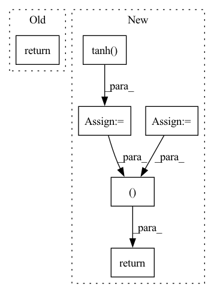

Pattern ID :8140

Before Change
def forward(self, state):
a = F.relu(self.l1(state))
a = F.relu(self.l2(a))
return self.max_action * torch.tanh(self.l3(a))
class Critic(nn.Module):
After Change
a = F.relu(self.fc2(a))
mu = self.mu_head(a)
mu = torch.clip(mu, MEAN_MIN, MEAN_MAX)
log_sigma = self.sigma_head(a)
log_sigma = torch.clip(log_sigma, LOG_STD_MIN, LOG_STD_MAX)
sigma = torch.exp(log_sigma)
a_distribution = Normal(mu, sigma)
action = a_distribution.rsample()
logp_pi = a_distribution.log_prob(action).sum(axis=-1)
logp_pi -= (2 * (np.log(2) - action - F.softplus(-2 * action))).sum(axis=1)
logp_pi = torch.unsqueeze(logp_pi, dim=1)
action = self.max_action * torch.tanh(action)
mu = torch.tanh(mu) * self.max_action
return action, logp_pi, mu
def get_log_density(self, state, action):
a = F.relu(self.fc1(state))
a = F.relu(self.fc2(a))
In pattern: SUPERPATTERN
Frequency: 3
Non-data size: 6
Instances
Fragment ID: 28758646
Project Name: ryanxhr/dwbc
Commit Name: 7bf8e90c7bbf238b9a80c6c033844d37a17e898e
Time: 2022-06-24
Author: xuhaoran8@jd.com
File Name: algos/DWBC.py
M Class Name: Actor
N Class Name: Actor
M Method Name: forward(2)
N Method Name: forward(2)
M Parent Class: nn.Module
N Parent Class: nn.Module
M File Name: algos/DWBC.py
N File Name: algos/DWBC.py
M Start Line: 22
M End Line: 23
N Start Line: 36
N End Line: 52
'>
Before Change
def forward(self, x):
x_dilated = self.conv_dilation(causal_pad(x, 2, self.dilation))
return self._forward_dilated(x_dilated)
def forward_fast(self, x):
Fast wave layer forward.
After Change
x_dilated = self.conv_dilation(
causal_pad(x, 2, self.dilation),
)
x_filter = torch.tanh(self.conv_tanh(x_dilated))
x_gate = torch.sigmoid(self.conv_sig(x_dilated))
x_h = x_gate * x_filter
skip = self.conv_skip(x_h)
return x_h + x_dilated, skip
class WaveNetBackbone(torch.nn.Module):
def __init__(
'>
Fragment ID: 28758640
Project Name: cheind/autoregressive
Commit Name: 895fe952e9a4de2bbdbf27e3b05cf99fad426c07
Time: 2021-10-20
Author: cheind@profactor.at
File Name: autoregressive/wave.py
M Class Name: WaveNetLayer
N Class Name: WaveNetLayer
M Method Name: forward(3)
N Method Name: forward(2)
M Parent Class: torch.nn.Module
N Parent Class: torch.nn.Module
M File Name: autoregressive/wave.py
N File Name: autoregressive/wave.py
M Start Line: 54
M End Line: 55
N Start Line: 56
N End Line: 77
'>
Before Change
]))
def forward(self, x):
return self.disc(x)
class Generator(nn.Module):
def __init__(self, channels_noise, channels_img, features_g):
After Change
x3 = x3.view(batch_size, -1)
// Returning logits to determine whether the images are real or fake
x4 = self.linear1(x3)
// Recognition network for latent variables has an additional layer
encoder = self.lrelu(self.linear2(x3))
z_prediction = self.tanh(self.linear3(encoder))
return x4, z_prediction
def truncated_normal_initializer(weight, mean=0, std=0.02):
size = weight.shape
tmp = weight.new_empty(size + (4,)).normal_()
'>
Fragment ID: 28758635
Project Name: ebartrum/lightning_gan_zoo
Commit Name: ada6e3d1398560a9cbcae15a4c5eb1425a2067e0
Time: 2021-03-31
Author: edward.bartrum@gmail.com
File Name: core/models/hologan_discriminator.py
M Class Name: Discriminator
N Class Name: Discriminator
M Method Name: forward(2)
N Method Name: forward(2)
M Parent Class: nn.Module
N Parent Class: nn.Module
M File Name: core/models/hologan_discriminator.py
N File Name: core/models/hologan_discriminator.py
M Start Line: 50
M End Line: 50
N Start Line: 57
N End Line: 70